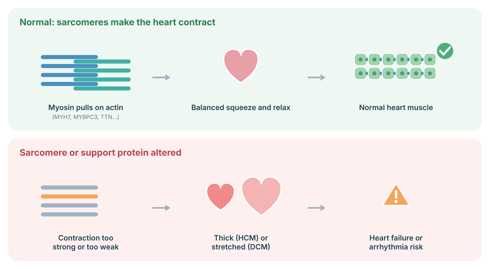
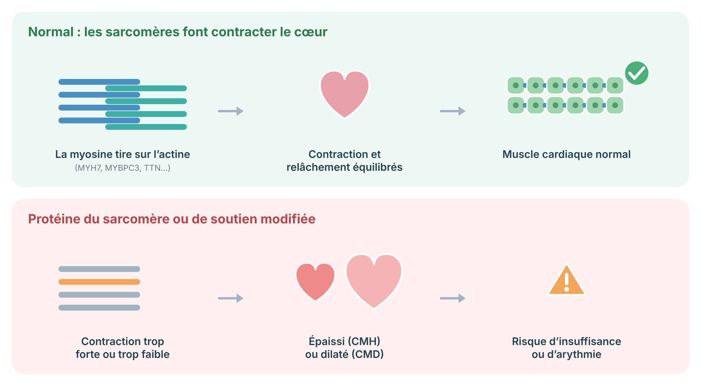

A protocol for hypertrophic cardiomyopathy: sarcomere genetics, phenocopies, assessment, sudden death risk, treatment, activity, pregnancy, and family screening.
Protocole pour la cardiomyopathie hypertrophique : génétique sarcomérique, phénocopies, évaluation, risque de mort subite, traitement, activité, grossesse et dépistage familial.
Hypertrophic cardiomyopathy (HCM) is a condition where the heart muscle becomes thicker than normal, without another cause such as high blood pressure. It is often inherited. Many people have few or no symptoms and a normal life expectancy. Some have shortness of breath, chest pain, palpitations, or fainting, and a small number are at risk of dangerous heart rhythms. Effective treatments exist for each of these.
La cardiomyopathie hypertrophique (CMH) est une maladie où le muscle cardiaque devient plus épais que la normale, sans autre cause comme l'hypertension. Elle est souvent héréditaire. Plusieurs personnes ont peu ou pas de symptômes et une espérance de vie normale. Certaines ont de l'essoufflement, des douleurs thoraciques, des palpitations ou des pertes de conscience, et un petit nombre est à risque de rythmes dangereux. Des traitements efficaces existent pour chacun de ces problèmes.
HCM is defined in adults by left ventricular wall thickness ≥15 mm in any segment not explained solely by loading conditions, or ≥13 mm in first-degree relatives of a patient or in genotype-positive individuals. Inheritance is mostly autosomal dominant with age-dependent, incomplete penetrance. Pathogenic variants in sarcomere genes — most often MYBPC3 and MYH7, and less often TNNT2, TNNI3, TPM1, MYL2, MYL3, and ACTC1 — are found in a substantial minority of probands, more often with a family history. Sarcomere-positive patients tend to have earlier onset and more adverse outcomes.
Chez l'adulte, la CMH se définit par une épaisseur pariétale du ventricule gauche ≥ 15 mm dans un segment, non expliquée uniquement par les conditions de charge, ou ≥ 13 mm chez les apparentés au premier degré d'un patient ou chez les personnes génotype-positives. La transmission est surtout autosomique dominante, avec pénétrance incomplète dépendante de l'âge. Des variants pathogènes de gènes sarcomériques — le plus souvent MYBPC3 et MYH7, moins souvent TNNT2, TNNI3, TPM1, MYL2, MYL3 et ACTC1 — sont trouvés chez une minorité importante des cas index, plus souvent en présence d'antécédents familiaux. Les patients sarcomère-positifs ont tendance à avoir un début plus précoce et une évolution plus défavorable.
Look for red flags of conditions that mimic HCM and have specific treatments: Fabry disease (GLA), transthyretin amyloidosis (TTR), Danon disease (LAMP2), PRKAG2 syndrome, RASopathies such as Noonan syndrome in children, and Friedreich ataxia. See also the cardiomyopathies overview.
Rechercher les signaux d'alerte des maladies qui imitent la CMH et ont des traitements précis : maladie de Fabry (GLA), amylose à transthyrétine (TTR), maladie de Danon (LAMP2), syndrome PRKAG2, RASopathies comme le syndrome de Noonan chez l'enfant, et ataxie de Friedreich. Voir aussi l'aperçu des cardiomyopathies.
Heart muscle contracts when myosin pulls on actin inside repeating units called sarcomeres; other proteins such as titin and the nuclear lamina support the cell. In hypertrophic cardiomyopathy, sarcomere changes (most often MYH7 or MYBPC3) make contraction too strong and relaxation poor, so the wall thickens. In dilated cardiomyopathy, changes such as TTN truncations or LMNA weaken the muscle, so the heart stretches and pumps poorly. Both raise the risk of heart failure and arrhythmia.

Sources: Chou C, Chin MT. Int J Mol Sci 2021;22 (PubMed).
Le muscle cardiaque se contracte lorsque la myosine tire sur l’actine dans des unités répétées appelées sarcomères; d’autres protéines comme la titine et la lamina nucléaire soutiennent la cellule. Dans la cardiomyopathie hypertrophique, des variations du sarcomère (le plus souvent MYH7 ou MYBPC3) rendent la contraction trop forte et le relâchement difficile : la paroi s’épaissit. Dans la cardiomyopathie dilatée, des variations comme les troncatures de TTN ou LMNA affaiblissent le muscle : le cœur se dilate et pompe mal. Les deux augmentent le risque d’insuffisance cardiaque et d’arythmie.

Sources : Chou C, Chin MT. Int J Mol Sci 2021;22 (PubMed).
Tests include an ECG, a heart ultrasound, a heart MRI, and a heart monitor, and sometimes an exercise test. A genetic test is offered to confirm the cause and to help relatives.
Les examens comprennent un ECG, une échographie cardiaque, une IRM cardiaque et un moniteur cardiaque, et parfois une épreuve d'effort. Un test génétique est offert pour confirmer la cause et aider les apparentés.
Medicines such as beta-blockers help symptoms. A newer type of medicine (a cardiac myosin inhibitor) can reduce obstruction in some people. When symptoms persist, a procedure can thin the thickened wall. People at higher risk of dangerous rhythms may be offered a defibrillator (ICD).
Des médicaments comme les bêtabloquants aident à soulager les symptômes. Un type de médicament plus récent (un inhibiteur de la myosine cardiaque) peut réduire l'obstruction chez certaines personnes. Si les symptômes persistent, une intervention peut amincir la paroi épaissie. Les personnes à risque plus élevé de rythmes dangereux peuvent se voir offrir un défibrillateur (DCI).
Most people with HCM are encouraged to stay active. Decisions about competitive sport are made together with an expert. Most pregnancies go well with planning and monitoring.
La plupart des personnes atteintes de CMH sont encouragées à rester actives. Les décisions concernant le sport de compétition sont prises avec un expert. La plupart des grossesses se déroulent bien avec planification et surveillance.
Each first-degree relative has a 1 in 2 chance of carrying the gene change. Relatives are offered a genetic test if the family change is known, and heart checks (ECG and ultrasound) either way if no gene change is known. Because HCM can appear later, carriers and relatives in families without a known gene change need repeat checks.
Chaque apparenté au premier degré a une chance sur deux de porter la modification. On offre aux apparentés un test génétique si la modification familiale est connue, et des examens cardiaques (ECG et échographie) si aucune modification n'est connue. Comme la CMH peut apparaître plus tard, les porteurs et les apparentés des familles sans modification connue ont besoin d'examens répétés.
Original diagrams are the work of the author (© 2026 Dr. Andrew Shuen).
Les schémas originaux sont l'œuvre de l'auteur (© 2026 Dr Andrew Shuen).